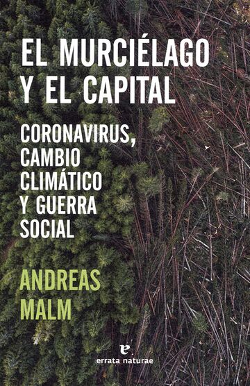

Autor: Andreas Malm | Editorial: Errata Naturae
Plantea que la pandemia de COVID-19 no es un accidente aislado, sino un síntoma de un sistema global en crisis.
Contextualiza la relación entre catástrofes sanitarias y ecológicas, mostrando cómo el capitalismo acelera la destrucción ambiental, introduciendo la idea de que tanto el cambio climático como las pandemias emergen de procesos estructurales —económicos, sociales y ecológicos—, más que de fenómenos naturales “espontáneos”.
Capítulo I:
Tesis de la producción Estructural: Malm sostiene que la pandemia no es un accidente ecológico aleatorio, sino el resultado de la "Frontera de la Mercancía". Esta frontera es la expansión continua del capital hacia ecosistemas vírgenes. La deforestación masiva (impulsada por la agroindustria, la minería y el monocultivo, como la palma de aceite) destruye el hábitat de especies portadoras de virus (como los murciélagos). Al desalojar a estas especies, se fuerza un contacto más íntimo y frecuente con poblaciones humanas y ganado, creando las condiciones perfectas para un "salto zoonótico" y la mutación viral. El virus es, por lo tanto, un fenómeno ecológico mediado por la lógica de acumulación capitalista.
Capítulo II:
Vector de Dispersión: La Globalización Capitalista: Este capítulo se centra en cómo el brote se transforma en pandemia. Malm critica las narrativas que culpan a los mercados húmedos o a la cultura oriental, argumentando que el verdadero vector de dispersión es el capital globalizado. El sistema de producción "just-in-time", basado en cadenas de suministro ultrarrápidas y el transporte aéreo intensivo, actúa como un acelerador radical, permitiendo que un brote regional se convierta en una crisis mundial en cuestión de semanas. Además, analiza la respuesta estatal inicial, que priorizó el mantenimiento del flujo de mercancías y la economía sobre medidas sanitarias estrictas, revelando un compromiso sistémico con la inercia económica.
Capítulo III:
La Doble Crisis y la Raíz Común: Malm establece una conexión crucial entre la crisis de salud (pandemias) y la crisis climática. Argumenta que ambas son manifestaciones de la misma "fractura metabólica" que el capitalismo impone a la naturaleza. Mientras la pandemia es una crisis aguda (rápida), el cambio climático es crónico (sistémico), pero ambos provienen de la inercia del Capital Fósil y su necesidad de crecimiento extractivo perpetuo. El autor concluye que la única solución verdadera y duradera pasa por un cambio social radical que desmantele la infraestructura fósil y la lógica de acumulación, proponiendo una acción colectiva de tipo "comunismo de guerra ecológica" para frenar la destrucción.
Revolución Metabólica / Fractura Metabólica:
Concepto de Marx revivido. Se refiere a la ruptura del intercambio equilibrado entre la humanidad y la naturaleza, donde el capital rompe los ciclos naturales de la tierra y la vida silvestre.
Capital Fósil:
Estructura socioeconómica y tecnológica basada históricamente en la quema de combustibles fósiles, la cual es la raíz de la crisis climática y, tangencialmente, de las crisis zoonóticas por la necesidad de expansión.
Acumulación por Despojo Ecológico:
El proceso por el cual el capital se expande invadiendo y mercantilizando los territorios naturales, incluyendo la vida silvestre y los recursos hídricos, creando las condiciones para los saltos virales.
Hallazgos Principales: El hallazgo más importante es la desnaturalización de las pandemias: son fenómenos socio-ecológicos producidos por el sistema económico dominante. Malm obliga a mirar más allá de la virología hacia la economía política.
Importancia para mi Formación: Como futuro ingeniero, la lectura me dota de una perspectiva crítica indispensable. No basta con tratar los síntomas (pandemias, calor extremo); es necesario cuestionar la estructura que los genera. Esto implica integrar la sostenibilidad radical y la justicia social en cualquier proyecto o política que desarrolle, entendiendo que la crisis ecológica es, ante todo, una crisis de poder.